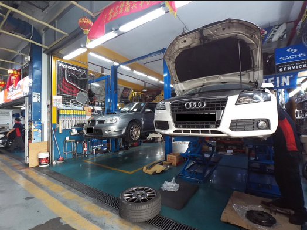

Dobrodošli na spletno stran podjetja PS Avtostoritve!
Z avtomobilskimi storitvami se podjetje ukvarja že več kot 20 let. Na področju nudenja storitev strankam imamo veliko izkušenj, posebej pa smo specializirani za iskanje inovativnih rešitev ter hitro odpravo napak. Pohvalimo se lahko tudi z najdosobnejšo informacijsko opremo.
Imamo pogodbena razmerja z dobavitelji rezervnih in nadomestnih delov za rabljene avtomobile in nudimo konkurenčne cene.
Smo ponosni partnerji podjetja Autocom, ki nudi podporo našim informacijskim sistemom za hitro diagnozo ter odpravo težav.